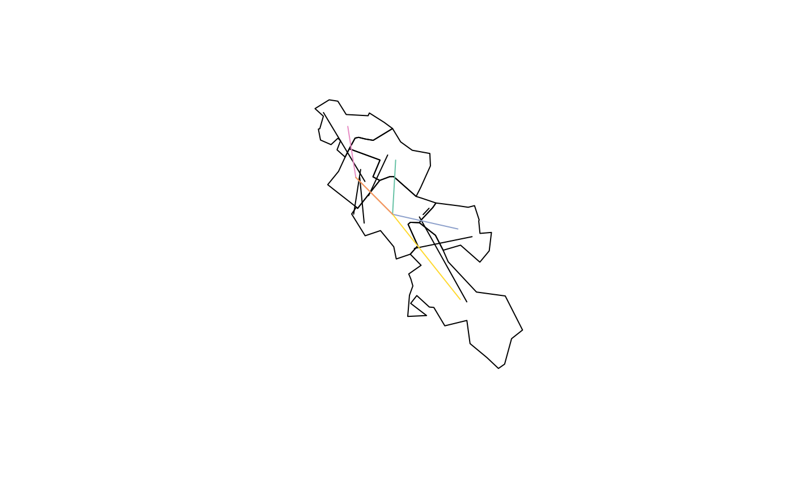
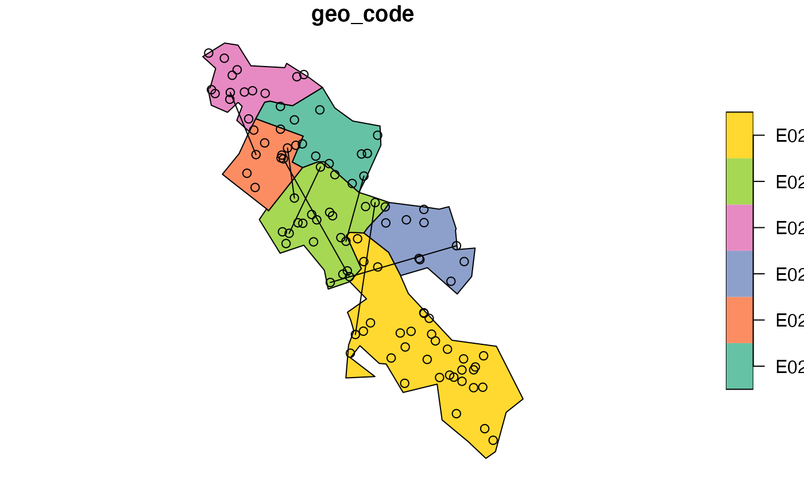

R/rand.R
od_rand.RdThese functions tackle the problem associated with OD data representing movement to and from large zones. Typically the associated desire lines start and end in one point per zone. This function produces desire lines that can start and end anywhere (or at predefined points) within each zone. See issue #11 for details.
od_rand(od, z, subpoints = NULL)
| od | An origin-destination data frame |
|---|---|
| z | Zones representing origins and destinations |
| subpoints | Points within the zones defining the OD data start/end points |
An sf data frame
#>#>#>#> Warning: ignoring all but the first attribute# # Test interactively with # mapview::mapview(desire_lines) + desire_lines_rand + z subpoints = sf::st_sample(z, 100)#>#>